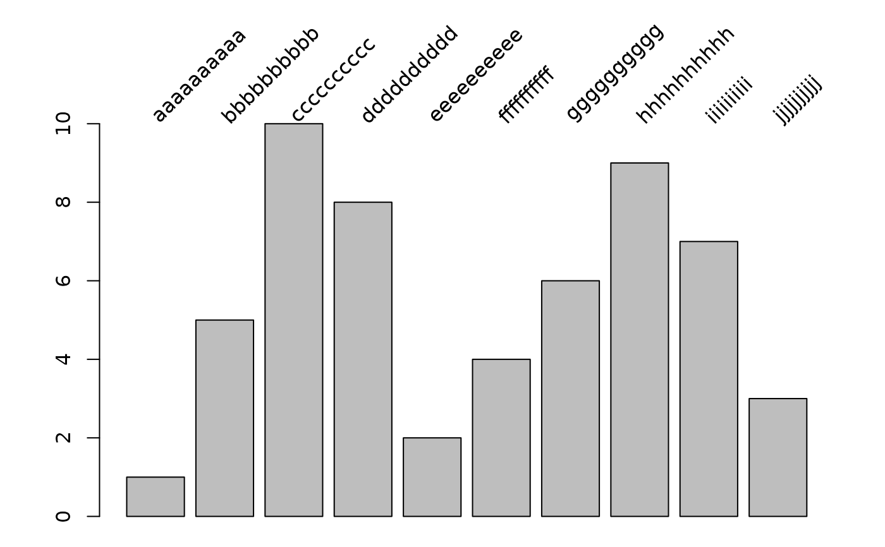
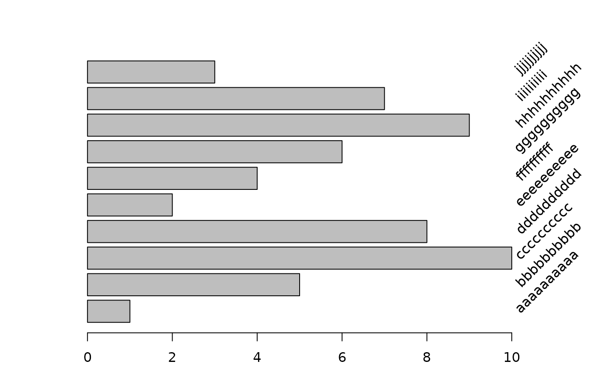

angleAxis.RdAdd a labeled axis to the current plot with rotated text
angleAxis(side, labels, at = 1:length(labels), srt = 45, adj, xpd = TRUE, ...)an integer specifying which side of the plot the axis is to be drawn on. The axis is placed as follows: 1=below, 2=left, 3=above and 4=right.
character or expression vector of labels to be placed at the tickpoints.
the points at which tick-marks are to be drawn. Non-finite (infinite, NaN or NA) values are omitted.
The string rotation in degrees. Defaults to 45 degrees (clockwise).
Text justification.
A value of 0 produces left-justified text, 0.5 centered text and 1
right-justified text. For side=1 and side=2, the
default value is adj=1. For side=3 and side=4
the default value is adj=0.
A logical value or NA. If FALSE, labels are clipped to the plot region, if TRUE, labels are clipped to the figure region, and if NA, labels are clipped to the device region.
optional arguments passed to text. Common examples are col, cex.
This function augments the feature of the axis functon by allowing the axis labels to be rotated.
# create a vector with some values and long labels
values <- sample(1:10)
names(values) <- sapply(letters[1:10],
function(x) paste(rep(x, 10), sep="",collapse="")
)
# barplot labels are too long for the available space, hence some are not plotted
barplot(values)
# to add angled labels, tell barplot not to label the x axis, and store the bar location
at <- barplot(values, xaxt="n")
# then use angleAxs
angleAxis(1, at=at, labels = names(values))
# angle counter-clockwise instead
at <- barplot(values, xaxt="n")
angleAxis(1, at=at, labels = names(values), srt=-45, adj=0)
# put labels at the top
oldpar <- par()$mar
par(mar=c(1,4,5,2)+0.1)
at <- barplot(values, xaxt="n")
angleAxis(3, at=at, labels = names(values))

par(oldpar)
#> Warning: argument 1 does not name a graphical parameter
#> NULL
# put labels on the left
oldpar <- par()$mar
par(mar=c(5,5,3,2)+0.1)
at <- barplot(values, yaxt="n", horiz=TRUE)
angleAxis(2, at=at, labels = names(values))
par(oldpar)
#> Warning: argument 1 does not name a graphical parameter
#> NULL
# put labels on the right
oldpar <- par()$mar
par(mar=c(2,5,3,5)+0.1)
at <- barplot(values, yaxt="n", horiz=TRUE)
angleAxis(4, at=at, labels = names(values))

par(oldpar)
#> Warning: argument 1 does not name a graphical parameter
#> NULL
# specify colors for bars and labels
at <- barplot(values, xaxt="n", col=1:10)
angleAxis(1, at=at, labels = names(values), col=1:10)